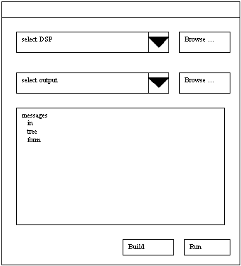

| From: | Scott Turner | |
| To: | Peter Goodrich | |
| Date: | 2000 April 26, revised May 30 |
The purpose of the "log presentation" is to organize the messages and logs produced by various phases and processes of model build, to make the information available in a useful and rational form.
Currently, most of the model build status and error information is dumped into a log file, which is difficult to deal with because:
"Log presentation" improvement will analyze and provide structure to the information which currently goes into the log.
Improvements to log presentation will take place in the context of Kit's & Sudha's log creation, and a GUI front end for the push button model build. Log presentation is handled by a module which is in between these two.
| Model Build / Logger ==> Log Presentation ==> GUI |
Implementing good log presentation will require feedback from users. Since the goal is to give users the information they need at the time they are looking for it, we need to focus on the most common impediments to a successful model build. I will seek out user experience through in-house QA and through trials at customer sites, noting what is available in the log and what information the user needs to see. This user experience imposes requirements on the log presentation. I am hopeful that by handling 10 or so different user scenarios well, we can provide a smooth and pleasant user experience 90% of the time.
Some enhancements to log presentation will require better structuring. These can be handled partly in the log presentation module and partly in the parser driver, by providing more structure (using more process ids for chunks of the processing). Other enhancements will require revising the information going into the log. And some can be addressed by intelligent analysis of the log and the build environment.
If log presentation needs to detect messages in the log based on their text, it should use a configuration file for this purpose, so that it can be readily updated if the messages should change.
Messages from the logger include
<msg sev="normal" parent="95" finish>The model build is done.</msg>
<msg sev="catastrophe" parent="127">
The file $1 could not be opened.
<arg num="1">bleaugh</arg></msg>
<spawn child="131" parent="95">C++ Parser</spawn>
<msg sev="normal" parent="97" summary>
===== Update Summary project /ttt =====
24 modules succeeded update
24 modules needed update for project /ttt
0 modules failed update</msg>
In addition, "log presentation" requires the following from the log maker:
The message bodies passed from logger to presentation are expected to evolve, to become ASCII message identifiers. They are taken verbatim from the source code. Log presentation will look them up in a translation table for an appropriate language. Note that the "Update Summary" example above is not ready for translation. It is acceptable right now, but will need to change eventually.
There are three elements types.
Communication from "log presentation" to the Java GUI consists of (1) the structured log and (2) progress fraction updates. Both the progress number and the structured log are available as soon as the push-button-model-build starts. Dynamic updates are particularly interesting for the tree-structured log.
The messages from "log presentation" to GUI use XML as follows:
| message type | parameters | example |
|---|---|---|
| progress | percent done, title of current phase | <progress done="24%" title="model build"/> |
| done (no more progress) | <done/> | |
| new message (tree) node | node id, severity, help id, body/text | <message node="527" severity="catastrophe" help="259">Out of memory.</message> |
| revise message (tree) node | node id, severity, help id, body/text | <message node="527" severity="catastrophe" help="259">Out of memory.</message> |
| append child | parent node id, child node id | <append node="527" parent="525"/> |
| prepend child | parent node id, child node id | <prepend node="527" parent="525"/> |
| append to sibling | id of base sibling, id of new sibling | <append node="527" sibling="526"/> |
| prepend to sibling | id of base sibling, id of new sibling | <prepend node="527" sibling="526"/> |
| delete node | <delete node="527"/> |
| action | parameters | example |
|---|---|---|
| progress | percent done, title of current phase | <progress done="24%" title="model build"/> |
| done (no more progress) | <done/> | |
| new message | node id, severity, help id, position, body/text | <message node="527" severity="catastrophe" help="259" parent="525" >Out of memory.</message> |
| move message to last top-level position | node id, position (implicit) | <move node="527"/> |
| move message to first top-level position | node id, position | <move node="527" prepend/> |
| move message to last child of given parent | node id, position | <move node="527" parent="635"/> |
| move message to first child of given parent | node id, position | <move node="527" parent="635" prepend/> |
| move message to follow a given sibling | node id, position | <move node="527" sibling="529"/> |
| move message to precede a given sibling | node id, position | <move node="527" sibling="529" prepend/> |
| revise message (tree) node | node id, any changed parameters, (no position) | <revise node="527" severity="catastrophe" help="259">Out of memory.</message> |
| delete node and all descendants | node id | <delete node="527"/> |
| delete all descendants of a node | parent node id | <delete parent="525"/> |
Notes:
Discover will install a push button in MS Visual Studio. When the user clicks the button, it will invoke an executable that's part of Discover. This executable is not the Java GUI, because Java can't start the other pieces of the push-button-model-build. It is a small coordinator which starts the Java GUI, and which afterward receives communications from the Java GUI.
To start the push-button-model-build executable, MS Visual Studio finds it via the environment variable DIS_PBMB. It passes one argument, indicating the current project. (The driver actually needs the pathname of the project's DSP file, but as far as we know this is not in the public interface for Visual Studio plug-ins.) This driver executable
parser_driver.pl).
Note that having Visual Studio active is not really important for the pushbutton model build, because the user still gets to select the DSP file in the Java GUI. The driver and the Java GUI should be robust to start up successfully even if a project name is not supplied.
The Java GUI sends the following messages (in XML) to the push-button-model-build engine.
| message type | description | example |
|---|---|---|
| Start & Run | i.e. start model build and run Code Rover | <start/> |
| Build | and not start Code Rover | <build/> |
| Cancel | <cancel/> | |
| DSP | Set location to find DSP file. | <dsp>f:\discover\src\discovermdi\discovermdi.dsp</dsp> |
| Output | Set location on for ADMINDIR & model. | <output>f:\discover\src\discovermdi\model</output> |
The Java GUI can have a visual arrangement such as:

The GUI supports a command, by which the user can dump the XML log to a file. A stylesheet suitable for viewing the XML log will be supplied with the push-button-model-build.
Clicking on a log message should pop up a help window describing possible solutions. (This is not a first cut feature.)
The XML communications API for C++ will be built on IBM's XML4C. To send an XML element, it is constructed by a sequence of member function calls which add the element tag, attributes, and text. Upon receiving an XML element, member functions allow access to the tag and text. Another member function supports lookup of attributes.
This API may be based on a portable, template-based library for strings and containers, or it may be based on the standard C++ library.
The use of an industrial strength implementation of XML will allow for eventual translation of messages to any language.
More details of how the logger is embodied, and how it communicates with the log presentation process.
Would it make more sense for message translation to take place in the Java GUI?
It might be preferable to do message translation lookup and parameter subsititution in the Java GUI. That way the C++ code of the log presentation need not be concerned with character sets and Unicode.